组织碳核算：组织边界与核算边界维护
本章用于维护组织温室气体盘查的基础口径。使用顺序为：先维护报告主体，再建立报告期，随后创建组织边界版本，最后维护纳入边界的区域、设备或其他设施。边界版本发布后进入正式核算口径，后续调整通过新版本或归档处理。
打开边界维护页面
进入 /carbon/organization/boundary。页面集中展示报告主体、报告期、组织边界版本、边界设施，以及下方的核算边界配置区。
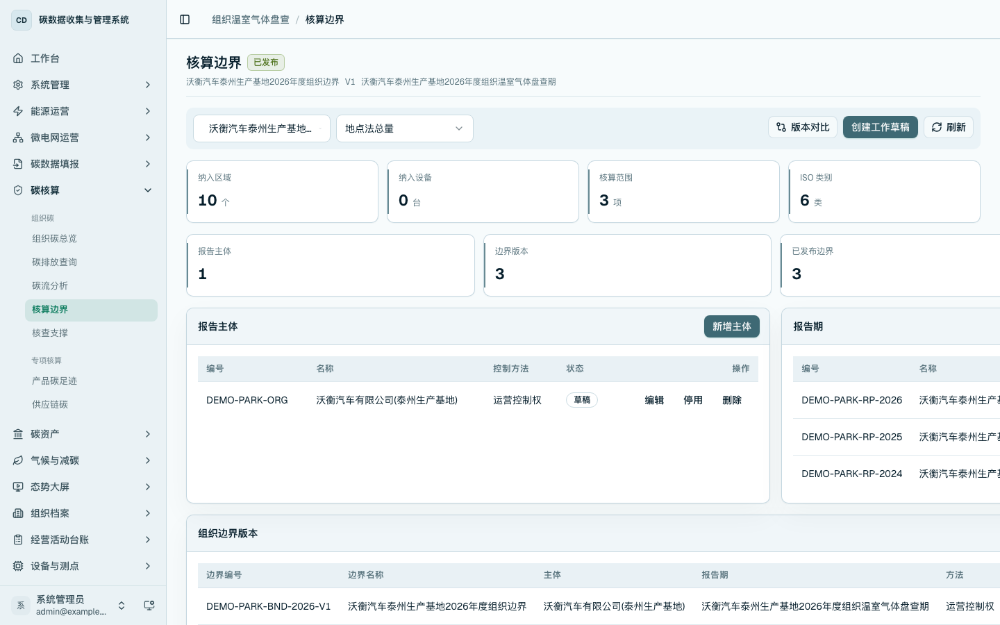
维护报告主体
点击「新增主体」，填写主体编号、主体名称、统一社会信用代码和控制方法。报告主体用于承载一个法人主体、生产基地或经确认的盘查组织。
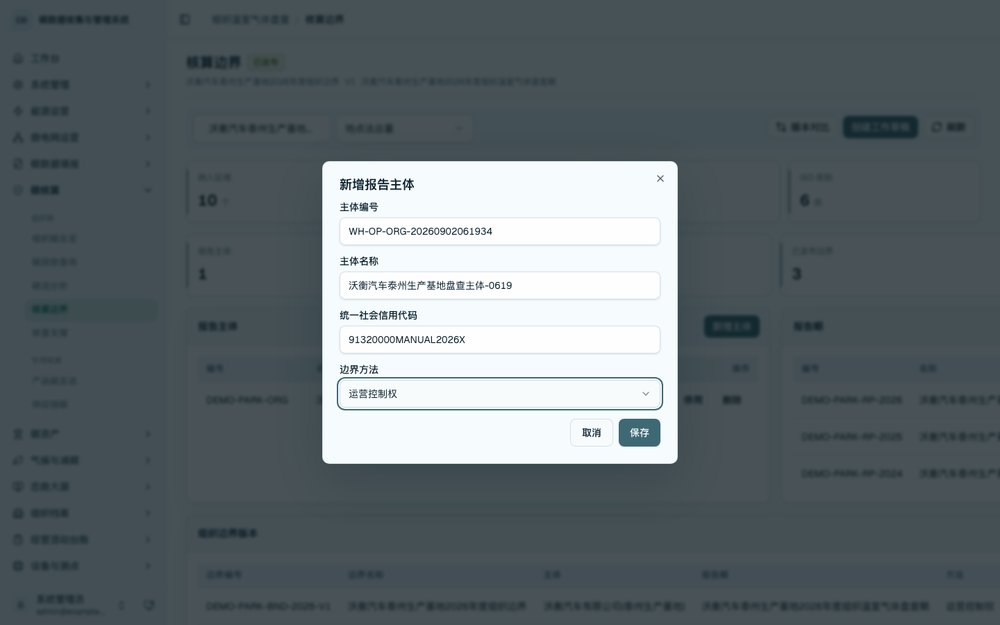
在报告主体列表点击「编辑」，可调整主体名称、社会信用代码和控制方法。保存后列表回显更新后的主体信息。
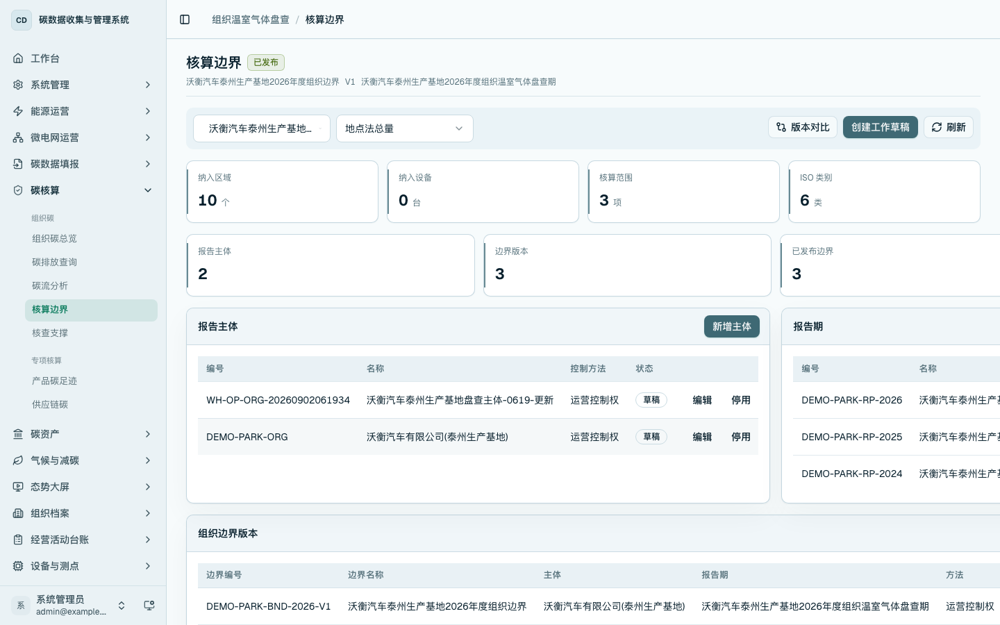
维护报告期
点击「新增报告期」，选择报告主体，填写报告期编号、报告期名称和起止日期。报告期用于限定本次组织盘查和后续报告生成的时间范围。
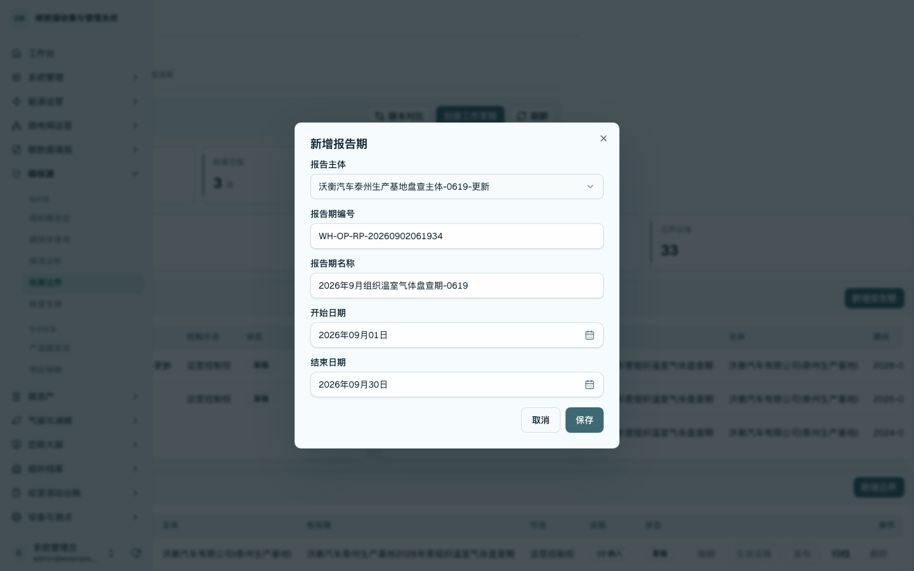
在报告期列表点击「编辑」，可调整报告期名称和日期范围。保存后列表回显更新后的报告期信息。
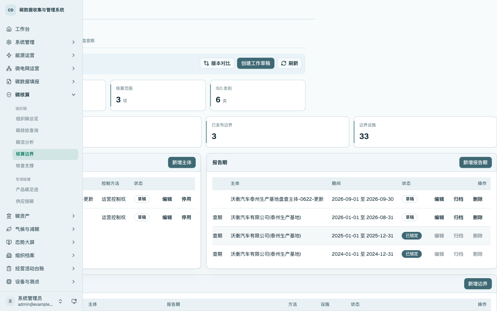
维护组织边界版本
点击「新增边界」，选择报告主体和报告期，填写边界编号、边界名称和边界方法。新建边界默认包含 Scope 1、Scope 2、Scope 3 和 ISO 14064-1 类别 1-6，可在核算边界配置区继续调整。
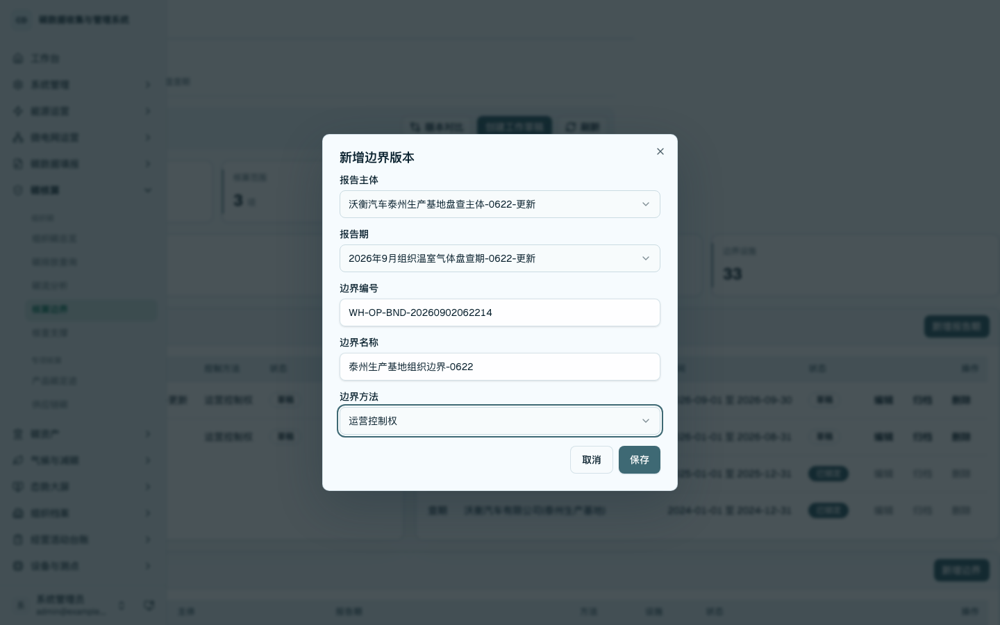
在组织边界版本列表点击「编辑」，可调整草稿边界的编号、名称和方法。已发布边界不直接编辑，按版本方式管理。
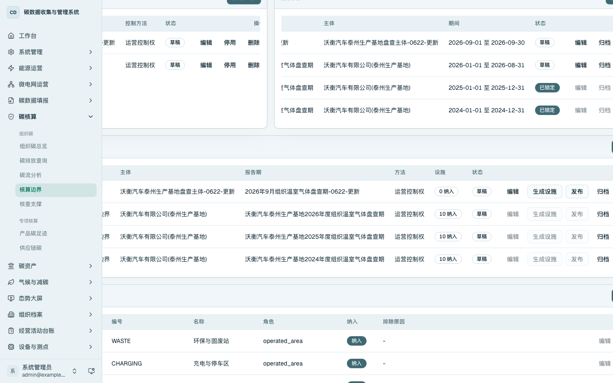
维护边界设施
点击「维护设施」，选择组织边界版本，填写设施类型、设施编号、设施名称、设施角色和纳入状态。边界设施用于明确哪些区域、设备或其他设施纳入本期核算。
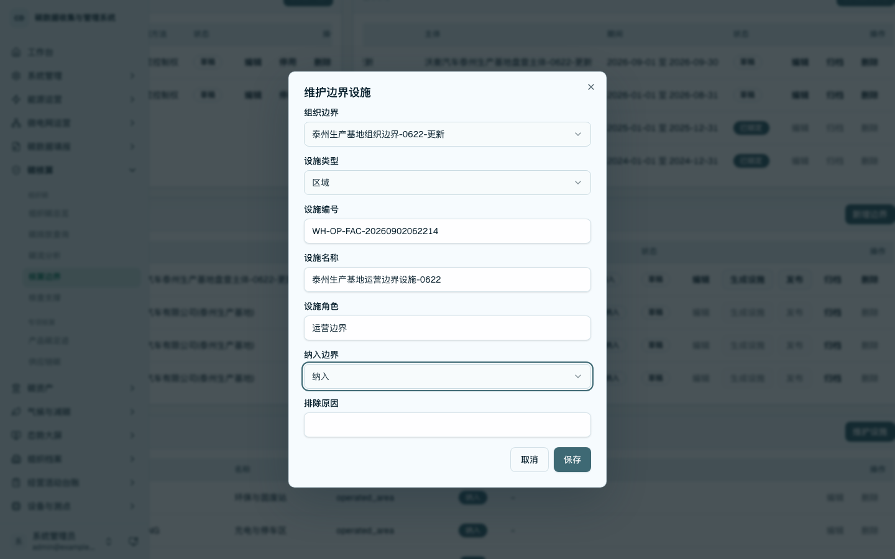
在边界设施列表点击「编辑」，可调整设施名称、角色、纳入状态和排除原因。排除设施时需填写排除原因。
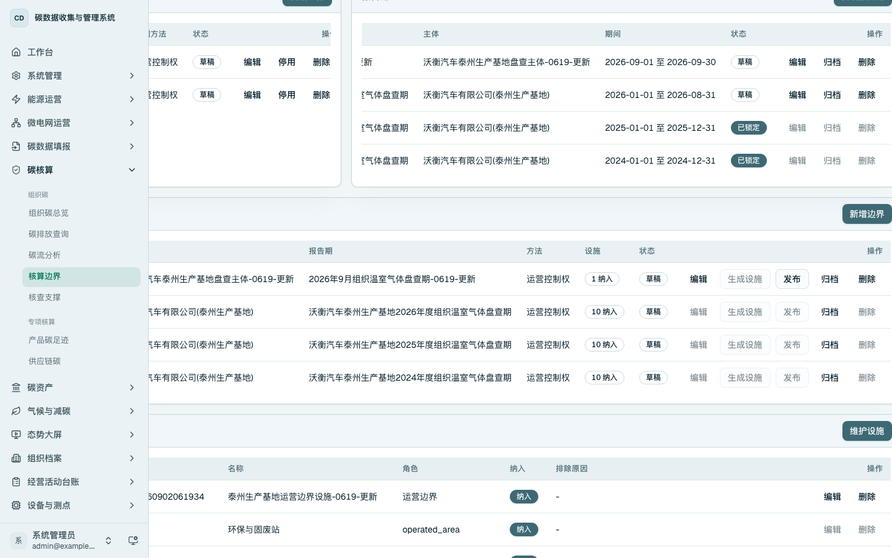
发布和清理边界版本
组织边界版本至少包含一个纳入设施后可以发布。发布后页面显示已发布状态和纳入设施数量。
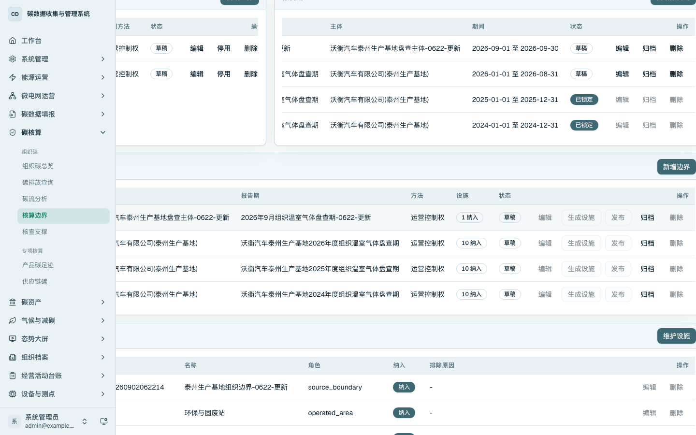
未被活动数据、核算运行、盘查报告和核查项目引用的边界版本可删除。已发布边界先归档，再按权限执行删除。
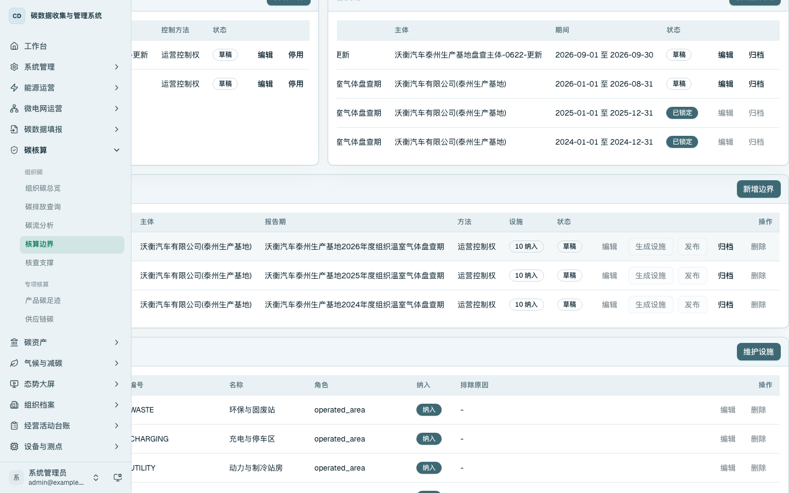